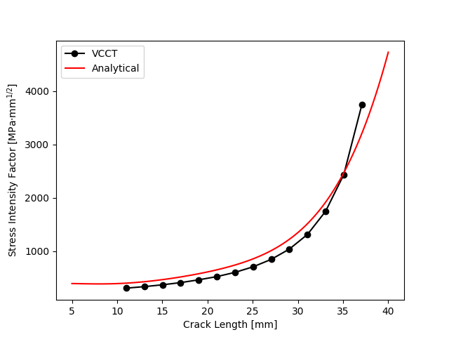
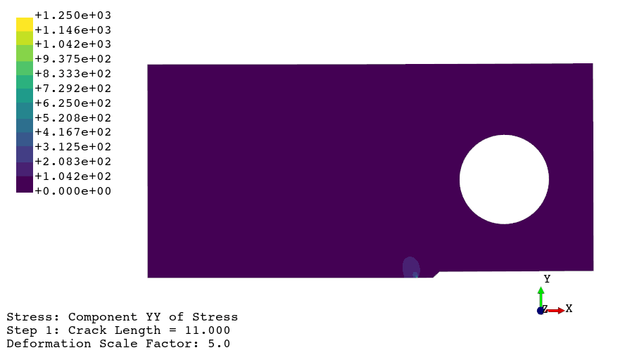

FEAPACK Examples
Advanced example #3: Stress intensity factors via VCCT.
In this example, we will use FEAPACK to perform several finite element analyses considering a compact tension (CT) specimen with multiple crack lengths. The objective is to compute the stress intensity factor (mode I) for each of the considered crack lengths. To this end, the virtual crack closure technique (VCCT) is used. Additionally, Gmsh is used to model the geometry and to generate the finite element mesh.
The geometry of the CT specimen is as follows (more information in the ASTM E647 standard):

Bbanerje, CC BY-SA 3.0, via Wikimedia Commons
{kind=link}
The FEAPACK files for this example can be found here.
Note 1: this example requires Gmsh for Python, which is not bundled with FEAPACK. To install Gmsh run: pip install gmsh.
Note 2: this example requires Matplotlib for Python, which is not bundled with FEAPACK. To install Matplotlib run: pip install matplotlib.
Solution via Gmsh and FEAPACK:
Start by creating a job script named advanced3.py and import the following modules:
import math
import gmsh
import feapack.gmsh
import feapack.model
import feapack.solver
We can then parameterize the script in order to make it easier to change the considered parameters, such as the geometry of the CT specimen.
#-----------------------------------------------------------
# PARAMETERS
#-----------------------------------------------------------
# geometry
W = 45.0 # mm | effective width
B = 4.0 # mm | thickness
an = 9.0 # mm | notch
p = 2.0 # mm | pre-crack
h = 1.5 # mm | envelope height
alpha = 30.0 # deg | envelope angle
# material and load
E = 210000.0 # MPa | Young's modulus
nu = 0.3 # ... | Poisson's ratio
P = 2000.0 # N | load magnitude
# geometry checks (ASTM)
if not W >= 25.0: raise ValueError('ASTM recommendation: W >= 25 mm')
if not W/20.0 <= B <= W/4.0: raise ValueError('ASTM recommendation: W/20 <= B <= W/4')
if not an >= 0.2*W: raise ValueError('ASTM recommendation: an >= 0.2W')
if not h <= W/16.0: raise ValueError('ASTM recommendation: h <= W/16')
if not p >= max(0.1*B, h, 1.0): raise ValueError('ASTM recommendation: p >= max(0.1B, h, 1 mm)')
if not alpha <= 30.0: raise ValueError('ASTM recommendation: alpha <= 30 deg')
Then, to define the geometry and mesh of the CT specimen, Gmsh is used, as shown below:
#-----------------------------------------------------------
# CREATING THE MESH WITH GMSH
#-----------------------------------------------------------
# initialize Gmsh
gmsh.initialize()
# points
a0 = an + p
r = 0.25*W/2.0
gmsh.model.geo.addPoint(0.0, 0.0, 0.0) # 1
gmsh.model.geo.addPoint(p, 0.0, 0.0) # 2
gmsh.model.geo.addPoint(h/(2.0*math.tan(math.radians(alpha/2.0))), h/2.0, 0.0) # 3
gmsh.model.geo.addPoint(a0 + 0.25*W, h/2.0, 0.0) # 4
gmsh.model.geo.addPoint(a0 + 0.25*W, 0.6*W, 0.0) # 5
gmsh.model.geo.addPoint(h/(2.0*math.tan(math.radians(alpha/2.0))), 0.6*W, 0.0) # 6
gmsh.model.geo.addPoint(p, 0.6*W, 0.0) # 7
gmsh.model.geo.addPoint(0.0, 0.6*W, 0.0) # 8
gmsh.model.geo.addPoint(a0 - W, 0.6*W, 0.0) # 9
gmsh.model.geo.addPoint(a0 - W, h/2.0, 0.0) # 10
gmsh.model.geo.addPoint(a0 - W, 0.0, 0.0) # 11
gmsh.model.geo.addPoint(0.0, h/2.0, 0.0) # 12
gmsh.model.geo.addPoint(p, h/2.0, 0.0) # 13
gmsh.model.geo.addPoint(a0, 0.275*W, 0.0) # 14
gmsh.model.geo.addPoint(a0 + r*math.cos(math.pi/4.0), 0.275*W + r*math.sin(math.pi/4.0), 0.0) # 15
gmsh.model.geo.addPoint(a0 + r*math.cos(3.0*math.pi/4.0), 0.275*W + r*math.sin(3.0*math.pi/4.0), 0.0) # 16
gmsh.model.geo.addPoint(a0 + r*math.cos(5.0*math.pi/4.0), 0.275*W + r*math.sin(5.0*math.pi/4.0), 0.0) # 17
gmsh.model.geo.addPoint(a0 + r*math.cos(7.0*math.pi/4.0), 0.275*W + r*math.sin(7.0*math.pi/4.0), 0.0) # 18
# curves
gmsh.model.geo.addLine(1, 2) # 1
gmsh.model.geo.addLine(2, 3) # 2
gmsh.model.geo.addLine(3, 4) # 3
gmsh.model.geo.addLine(4, 5) # 4
gmsh.model.geo.addLine(5, 6) # 5
gmsh.model.geo.addLine(6, 7) # 6
gmsh.model.geo.addLine(7, 8) # 7
gmsh.model.geo.addLine(8, 9) # 8
gmsh.model.geo.addLine(9, 10) # 9
gmsh.model.geo.addLine(10, 11) # 10
gmsh.model.geo.addLine(11, 1) # 11
gmsh.model.geo.addLine(1, 12) # 12
gmsh.model.geo.addLine(12, 8) # 13
gmsh.model.geo.addLine(2, 13) # 14
gmsh.model.geo.addLine(13, 7) # 15
gmsh.model.geo.addLine(10, 12) # 16
gmsh.model.geo.addLine(12, 13) # 17
gmsh.model.geo.addLine(13, 3) # 18
gmsh.model.geo.addLine(3, 6) # 19
gmsh.model.geo.addCircleArc(15, 14, 16) # 20
gmsh.model.geo.addCircleArc(16, 14, 17) # 21
gmsh.model.geo.addCircleArc(17, 14, 18) # 22
gmsh.model.geo.addCircleArc(18, 14, 15) # 23
gmsh.model.geo.addLine(3, 17) # 24
gmsh.model.geo.addLine(6, 16) # 25
gmsh.model.geo.addLine(5, 15) # 26
gmsh.model.geo.addLine(4, 18) # 27
# curve loops
gmsh.model.geo.addCurveLoop([11, 12, -16, 10]) # 1
gmsh.model.geo.addCurveLoop([1, 14, -17, -12]) # 2
gmsh.model.geo.addCurveLoop([2, -18, -14]) # 3
gmsh.model.geo.addCurveLoop([9, 16, 13, 8]) # 4
gmsh.model.geo.addCurveLoop([13, -7, -15, -17]) # 5
gmsh.model.geo.addCurveLoop([18, 19, 6, -15]) # 6
gmsh.model.geo.addCurveLoop([24, -21, -25, -19]) # 7
gmsh.model.geo.addCurveLoop([24, 22, -27, -3]) # 8
gmsh.model.geo.addCurveLoop([27, 23, -26, -4]) # 9
gmsh.model.geo.addCurveLoop([5, 25, -20, -26]) # 10
# surfaces
for i in range(1, 11):
gmsh.model.geo.addPlaneSurface([i])
# geometry done
gmsh.model.geo.synchronize()
# create Gmsh physical groups that will become FEAPACK sets
# by default, Gmsh only saves elements associated with a physical group
# hence, a physical group specifying the domain is generally required
gmsh.model.addPhysicalGroup(2, [*range(1, 11)], name='PG-DOMAIN') # contains the whole domain (2D surfaces)
gmsh.model.addPhysicalGroup(1, [20, 21, 22, 23], name='PG-HOLE') # contains the hole edges (1D curves)
gmsh.model.addPhysicalGroup(1, [11], name='PG-CRACK') # contains the crack path (a 1D curve)
gmsh.model.addPhysicalGroup(0, [11], name='PG-FIXED') # contains the final crack path node (a 0D point)
# transfinite options
for i in range(1, 28):
if i in (8, 11, 16): n = 50
else: n = 10
gmsh.model.mesh.setTransfiniteCurve(i, n)
for i in range(1, 11):
if i == 3: continue
gmsh.model.mesh.setTransfiniteSurface(i)
# generate and recombine 2D mesh
gmsh.model.mesh.generate(2)
gmsh.model.mesh.recombine()
# if you want to view the mesh now, uncomment the following line
# gmsh.fltk.run()
# write mesh to file
gmsh.option.setNumber('Mesh.SaveAll', False) # default (also works with True, but more unused elements are saved)
gmsh.option.setNumber('Mesh.SaveGroupsOfNodes', True) # to save node sets
gmsh.write('advanced3.inp')
# finalize Gmsh
gmsh.finalize()
The following mesh is generated and saved to advanced3.inp:


Notice that only half the geometry is modelled, which is possible due to a symmetry boundary condition. Additionally, a plane stress condition is assumed.
Using FEAPACK, we can then create the finite element model as usual:
#-----------------------------------------------------------
# FINITE ELEMENT ANALYSIS WITH FEAPACK
#-----------------------------------------------------------
# create model database (MDB)
feapack.gmsh.clean('advanced3.inp') # required if inp file is generated by Gmsh
mdb = feapack.model.MDB.fromFile('advanced3.inp')
# print available sets
print('Node sets:', *mdb.nodeSets.keys()) # Node sets: PG-FIXED PG-HOLE PG-CRACK PG-DOMAIN
print('Element sets:', *mdb.elementSets.keys()) # Element sets: PG-DOMAIN
# create surface set for load application
mdb.surfaceSet(name='HOLE-SURFACE', surfaceNodes='PG-HOLE')
# create material and section
mdb.material(name='MATERIAL', young=E, poisson=nu)
mdb.section(
name='SECTION',
region='PG-DOMAIN',
material='MATERIAL',
type=feapack.model.SectionTypes.PlaneStress, # or simply 'PlaneStress'
thickness=B,
reducedIntegration=False
)
# create load
A = 2.0*math.pi*r*B
mdb.surfaceTraction(name='LOAD', region='HOLE-SURFACE', y=P/A)
# boundary conditions
mdb.boundaryCondition(name='X-LOCK', region='PG-FIXED', u=0.0)
mdb.boundaryCondition(name='Y-LOCK', region='PG-CRACK', v=0.0)
If we were to submit the MDB as is to the solver, we would be considering an initial pre-crack only. However, the objective is to consider multiple crack lengths, ranging from an initial pre-crack to full separation. To this end, multiple cracks are modelled by freeing nodes from the Y-symmetry ('Y-LOCK') boundary condition. This is easily accomplished by incrementally removing the appropriate nodes from the 'PG-CRACK' node set within a loop, as shown:
# solve multiple jobs
# release crack nodes on each iteration
jobCount = 0 # job counter
crackNodes = [*mdb.nodeSets['PG-CRACK'].indices] # unpack crack nodes into a list
crackNodes.sort(key=lambda index: mdb.mesh.nodes[index].x) # sort nodes by their X coordinate
crackTip = [] # crack tip
crackLength = [] # crack length
while len(crackNodes) > 10: # termination criterion
crackTip.append(crackNodes[-1]) # save current crack tip node index
crackLength.append(a0 + abs(mdb.mesh.nodes[crackTip[-1]].x)) # save current crack length
mdb.nodeSets['PG-CRACK'] = feapack.model.NodeSet(crackNodes) # replace existing node set (update crack)
feapack.solver.solve(mdb, analysis='static', jobName=f'advanced3_{jobCount:03}') # solve for current crack
crackNodes = crackNodes[:-1] # remove node from crack closure (release)
jobCount += 1 # increment job counter
# merge relevant output frames into a single output file
print('Merging output frames...')
feapack.model.ODB.merge(
filePath='advanced3.out',
selection=[(f'advanced3_{i:03}.out', [1]) for i in range(jobCount)],
descriptions=[f'Step {i + 1}: Crack Length = {crackLength[i]:.3f}' for i in range(jobCount)],
deleteExisting=True
)
print('Done')
Once the simulations have been carried out, the virtual crack closure technique (VCCT) can be used to compute the stress intensity factors (mode I) for each crack length. The following code could even be placed in a separate post-processing script:
#-----------------------------------------------------------
# VIRTUAL CRACK CLOSURE TECHNIQUE
#-----------------------------------------------------------
import numpy as np
import matplotlib.pyplot as plt
print('VCCT post-processing...')
# load results
odb = feapack.model.ODB('advanced3.out', mode='read')
odb.goToFirstFrame()
Fy, Uy = [], []
for i in range(jobCount):
Fy.append([*odb.getNodeOutputValues('Reaction Force>Reaction Force in Y')])
Uy.append([*odb.getNodeOutputValues('Displacement>Displacement in Y')])
odb.goToNextFrame()
# compute stress intensity factors
Ki = []
for i in range(jobCount - 1):
da = crackLength[i + 1] - crackLength[i]
fy = Fy[i][crackTip[i]]
uy = Uy[i + 1][crackTip[i]]
Gi = -(2.0*uy*fy)/(2.0*B*da)
Ki.append(math.sqrt(Gi*E))
# "analytical" solution
a_ana = np.linspace(5.0, 40.0, 100)
Ki_ana = P/B*math.sqrt(math.pi/W)*(
16.7*(a_ana/W)**(1/2) -
104.7*(a_ana/W)**(3/2) +
369.9*(a_ana/W)**(5/2) -
573.8*(a_ana/W)**(7/2) +
360.5*(a_ana/W)**(9/2)
)
# plot figure
plt.figure()
plt.xlabel('Crack Length [mm]')
plt.ylabel(r'Stress Intensity Factor [MPa⋅mm$^\text{1/2}$]')
plt.plot(crackLength[:-1], Ki, '-k', label='VCCT')
plt.plot(a_ana, Ki_ana, '--r', label='Analytical')
plt.legend()
plt.savefig('advanced3.png')
print('Done')
As shown above, the strain energy release rate is first computed using the following equation:
where:
- is the specimen thickness.
- is the virtual crack length increment.
- is the internal nodal force at the crack tip.
- is the crack opening displacement at the crack tip.
Of course, the internal nodal force at the crack tip is extracted considering the current crack length, whereas the crack opening displacement at the crack tip is extracted considering the next crack length, which represents a virtual crack extension/closure.
For the current plane stress condition, the strain energy release rate can be related to the stress intensity factor by the following expression:
The following plot is then generated:
From which the "analytical" solution is given by:
where:
 is the applied load.
is the applied load. is the thickness of the specimen.
is the thickness of the specimen.- is the effective width of the specimen.
 is the crack length.
is the crack length.
Finally, the following animation can be made using the viewer application:
